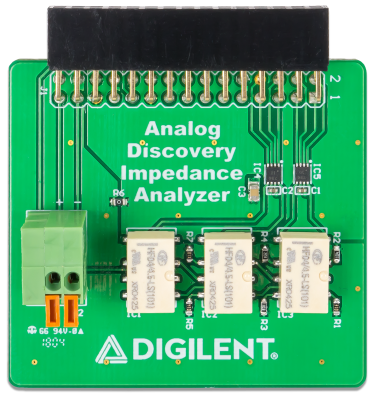
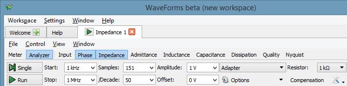

The Impedance Analyzer Instrument in WaveForms is made easier to use by the reference resistors and relays that come pre-loaded on the Impedance Analyzer board. The Analog Discovery can automatically select the most appropriate component for the job that it needs to do. The Impedance Analyzer is equipped with the 2×15 Analog Discovery connector, which makes it compatible with Analog Discovery Legacy, Analog Discovery 2, and Analog Discovery 2-NI Edition.

For more information, visit the reference page.
The board can be controlled by the Impedance Analyzer instrument after selecting Adapter. The instrument will take control over the Oscilloscope, Wavegen channel 1, Power Supplies, and Static (Digital) IO device resources.
The board can also be controlled by custom application or script, using the WaveForms SDK FDwfAnalogImpedance functions.
